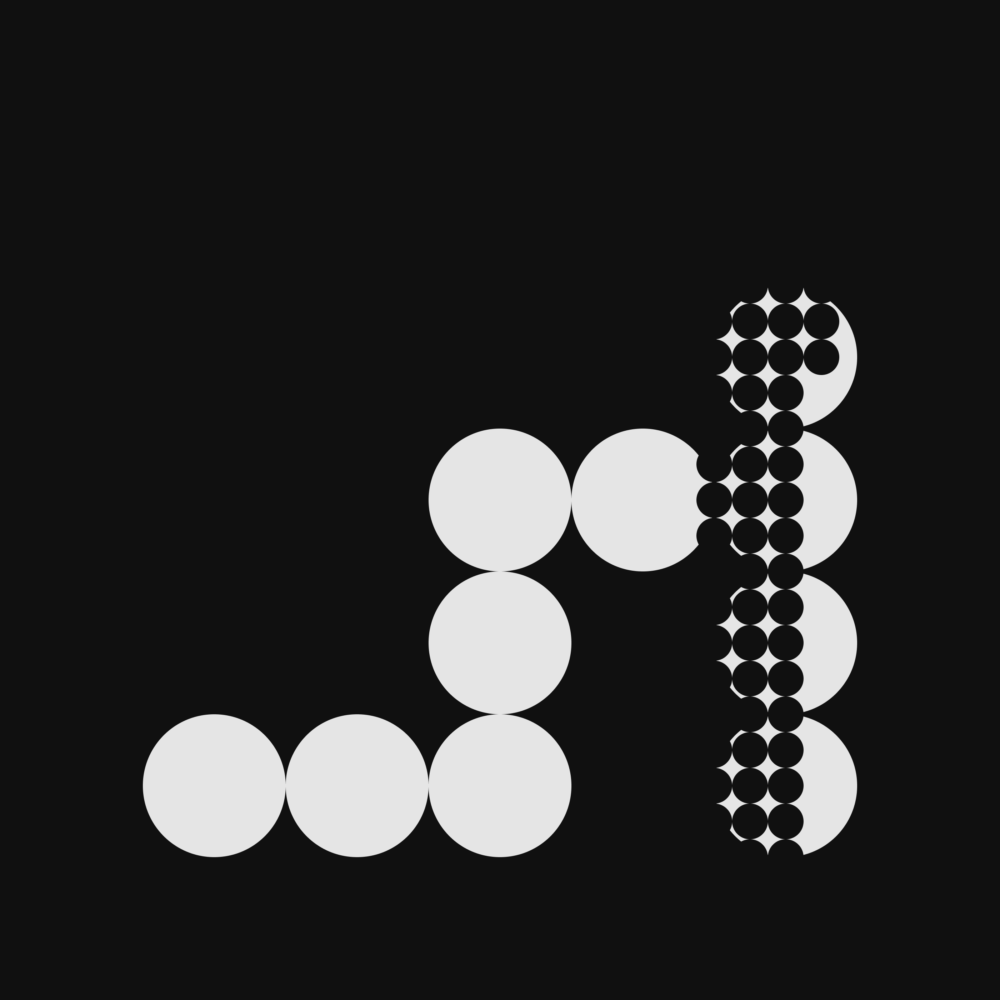
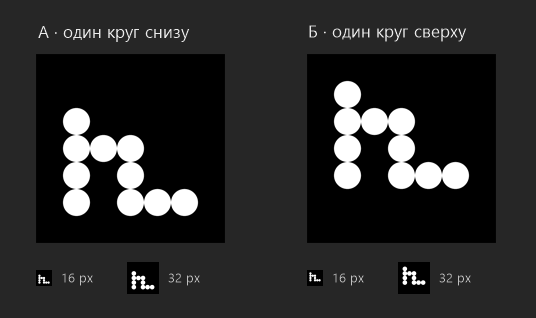

Этюды
Круги
Сетка из скетча 05

Диаметры кругов относятся как 1 : 4. Край большого круга проходит через центр малого: сетки смещены на половину малой ячейки.
Периметр
Шрифт и стрелка
Движение
Загрузка
h–girl
Подготавливаем пространство
Подготавливаем пространство
подготовка
пространства
подготовка
пространства
Значок
